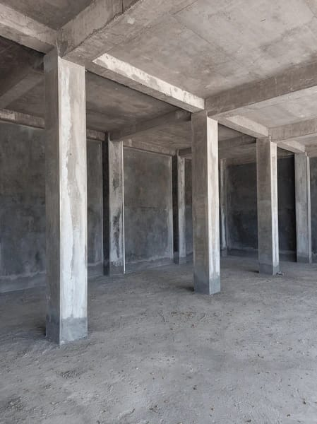

Columns and Beams in Civil Engineering
Columns and beams are essential structural elements in civil engineering. They support and distribute loads, forming the framework that ensures the strength and stability of a building.
🛠️Columns
Definition
A column is a vertical element that carries the load from slabs, beams, or roofs down to the foundation. Columns primarily resist compressive loads.
⚠️Functions of a Column
- Supports vertical loads from structures above.
- Transfers loads to the foundation.
- Maintains the structure’s stability.
- Resists compression and lateral forces (e.g., wind or earthquake).
🧠Types of Columns
- Based on Shape: Rectangular, Square, Circular, L-shaped, T-shaped
- Based on Material: RCC, Steel, Timber, Composite
- Based on Load Transfer: Axially Loaded, Eccentrically Loaded
🏗️Design Considerations
- Cross-sectional area
- Length and slenderness ratio
- Material type and grade
- Load type (static or dynamic)
⚠️Beams
Definition
A beam is a horizontal structural element that transfers loads from slabs to columns or walls. Beams resist bending and shear forces.
Functions of a Beam
- Supports vertical loads (slabs, people, furniture)
- Transfers loads to columns or walls
- Provides lateral support and ties the structure
- Controls deflection and resists bending
🧠Types of Beams
- By Support: Simply Supported, Cantilever, Continuous, Fixed
- By Material: RCC, Steel, Timber, Pre-stressed Concrete
- By Cross-section: Rectangular, T-beam, L-beam, I-beam
🏗️Combined Role of Columns and Beams
Columns and beams work together to form the load-bearing skeleton of a structure:
- Beams transfer horizontal loads to columns
- Columns transfer vertical loads to the foundation
- Both must withstand dead, live, seismic, and wind loads
✅Conclusion
Understanding columns and beams is essential in civil engineering. Properly designed, they ensure the structural integrity, strength, and safety of buildings over time.